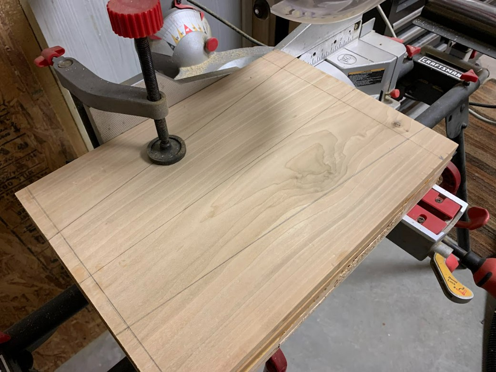
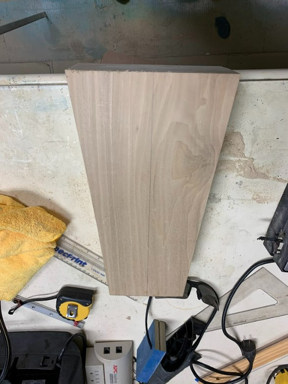
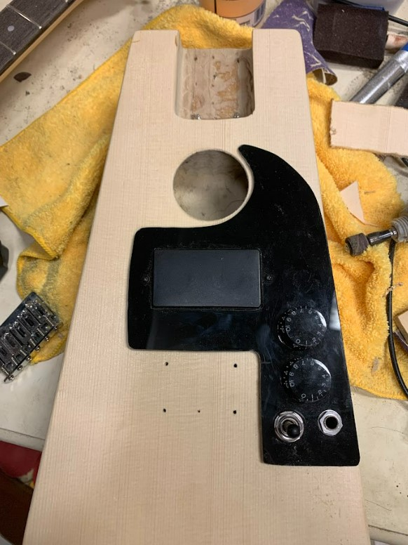
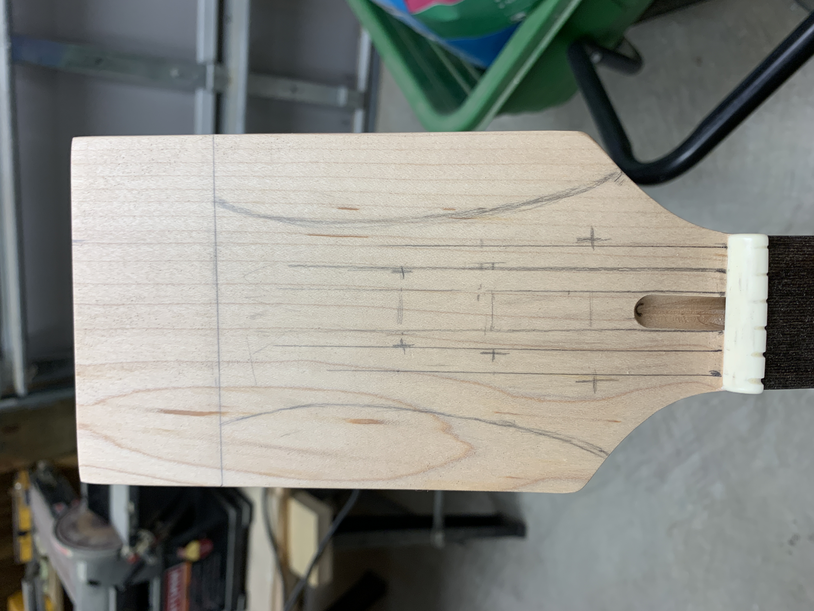

Playing guitar and singing are two of my favorite hobbies. Since I share this passion with my father, I'm fortunate to have access to several guitars. However, as any guitarist knows, the right number of guitars to own is always “one more than you currently have.” With limited funds and a unique use case, the guitar I wanted wasn't easy to find. After falling deep into a guitar building YouTube rabbit-hole, I set out to design and build my own.
Overview
This guitar is intended to be a small form factor versatile instrument. It can be played as an acoustic or electric guitar or both, and it works well in combination with a miniature amp. Features include...
- Electric Guitar Humbucker Pickup
- Acoustic-Electric Guitar Piezo Disk Pickup
- Hollow body construction
- 3-way selector switch for acoustic/both/electric
Design and Construction
This guitar is an original design and deviates from common practice guitar construction techniques. As such, much of the design and construction plan was decided during the building process based on what did and didn't work.

The design pulls inspiration from the Martin Backpacker and constructed in a similar fashion a Fender Thinline Telecaster with similar design elements such as...
- Body constructed from hollowed out poplar blank
- Pickgaurd containing electronics wired separately, then dropped in
- Bolt-on neck
Body
The body blank for this guitar started as a 8 ft 2 x 10 poplar board. The board was sawn into 16 inch lengths and glued in a stack. Finally, the body outline was cut bringing the blank to the correct shape.
 After hollowing the body, a spruce top is glued over the body cavity. This is a departure from the Telecaster inspiration and instead resembles an acoustic guitar top. Appropriate cutouts are then made for the sound hole and neck pocket.


The top was then cut to allow for the pickgaurd and electronics, and the bridge was installed.
Neck
This project used a prebuilt maple neck with a headstock blank because the budget for this project did not allow for the tools and materials required to build a neck. Below (left) is an initial design sketch for the headstock shape. This sketch was rejected because this project necessitated a short headstock. A simpler design (right) was selected that allows for straight sting pull and a short length. With the headstock cut, tuning holes are drilled and tuners installed.

Finishing
The guitar back, sides, neck, and headstock all received a walnut stain. The whole guitar was the protected with a wipe on polyurethane finish. Once the finish was applied, the neck could be bolted to the body and the strings could be installed.
Testing
Testing occurred at various stages during this project to establish project viability, and to ensure that systems functioned as expected
Preliminary
Before constructing the guitar, it was necessary to prove that the chosen method of acoustic amplification would work. A piezo disk pickup was selected because of its simplicity. While the original plan also included a powered preamp, this phase of testing outlined a passive system as the best choice for the following reasons:
- Piezo pickup overloads preamp causing audio peaking
- Preamp requires 9V battery power which would require modification of the body
- Preamp would require space inside the body cavity that would require modification
Progress
During construction further testing of the complete electronics system occurred ensuring that it would be functional upon assembly. The system includes the piezo acoustic guitar pickup, humbucker magnetic pickup, pickup switch, volume control, and tone control. The test was deemed successful an assembly was continued.
Final
After assembling the guitar, it underwent the final test: playing. The guitar plays well and produces some interesting tones by varying the two pickups and the volume and tone controls.
A video will be uploaded soon.
Conclusion
This was a challenging project due to few previous experiences in woodworking. Furthermore, the unique design and size of the body presented unique problems in fitting the electronics in and supporting the bridge and top. Despite these challenges, I built a unique instrument that achieved the goals I set at the beginning of the project and I gained immense knowledge in design and fabrication.